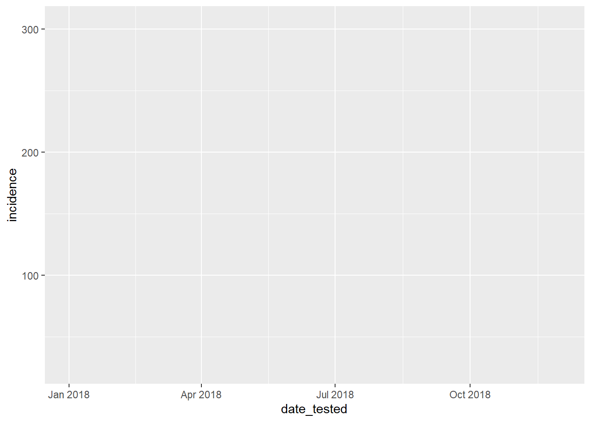
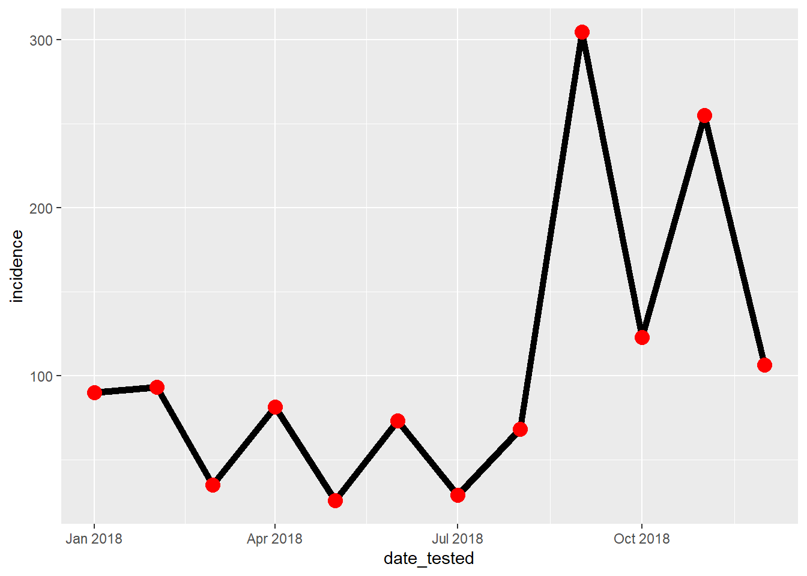
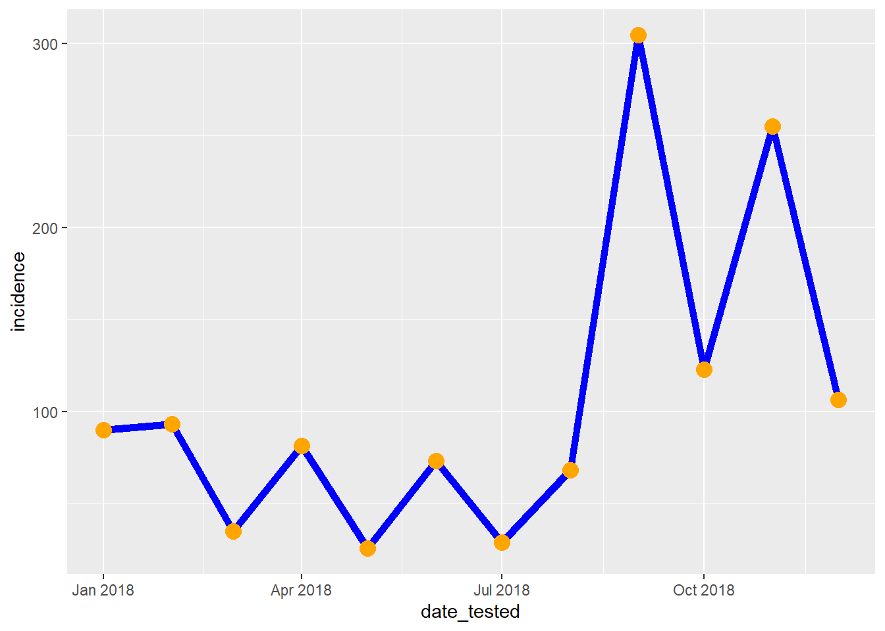
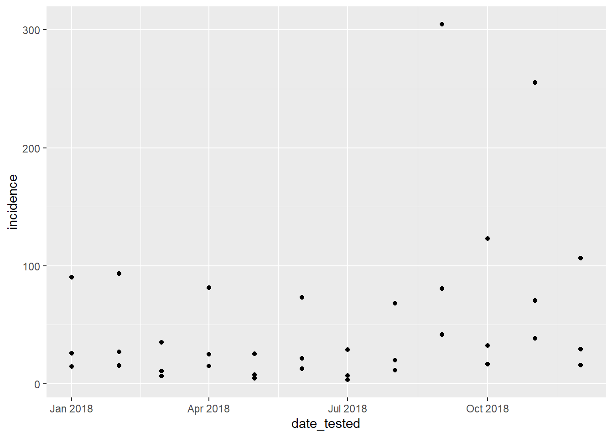
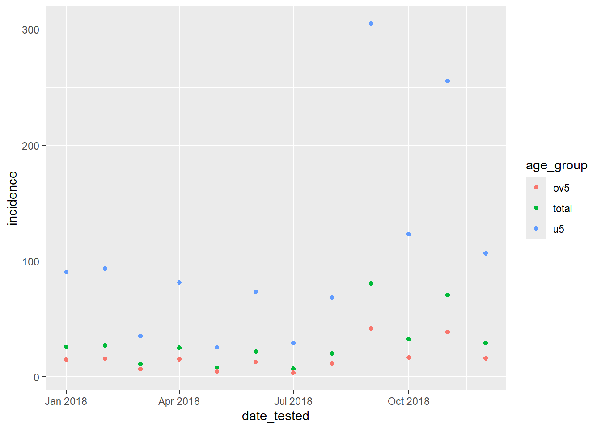
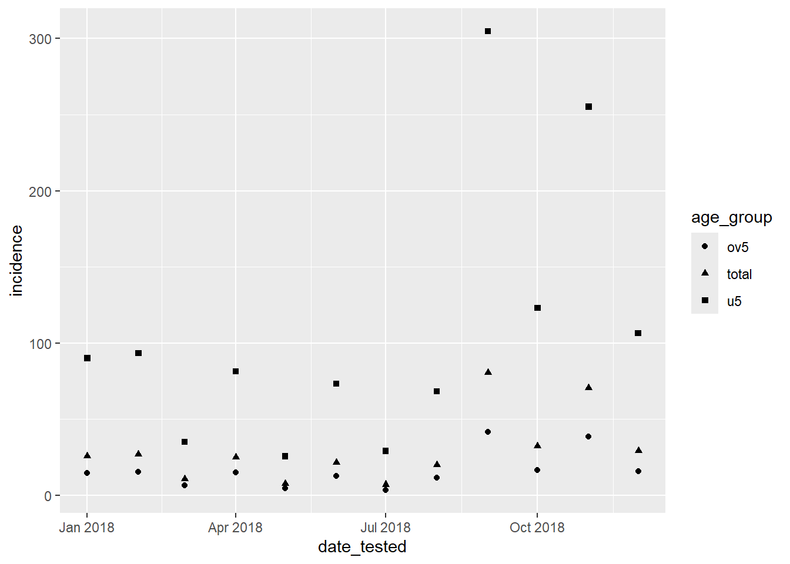
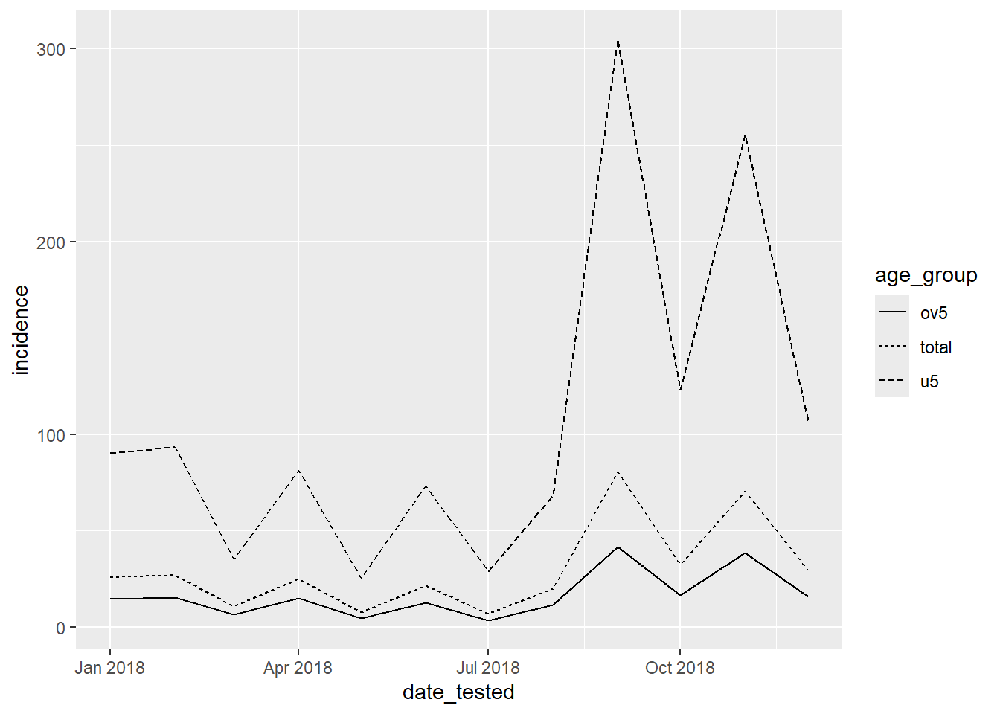
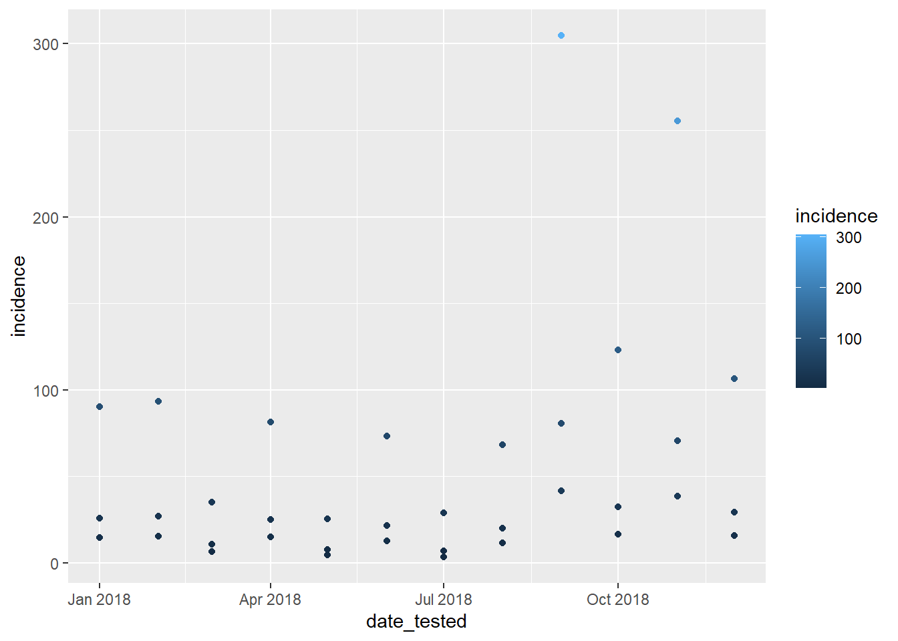
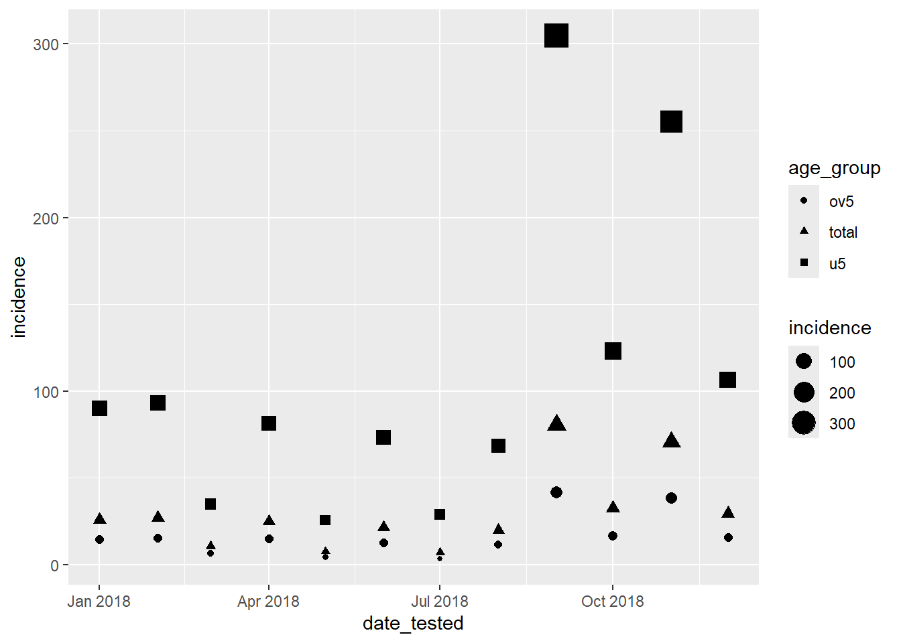
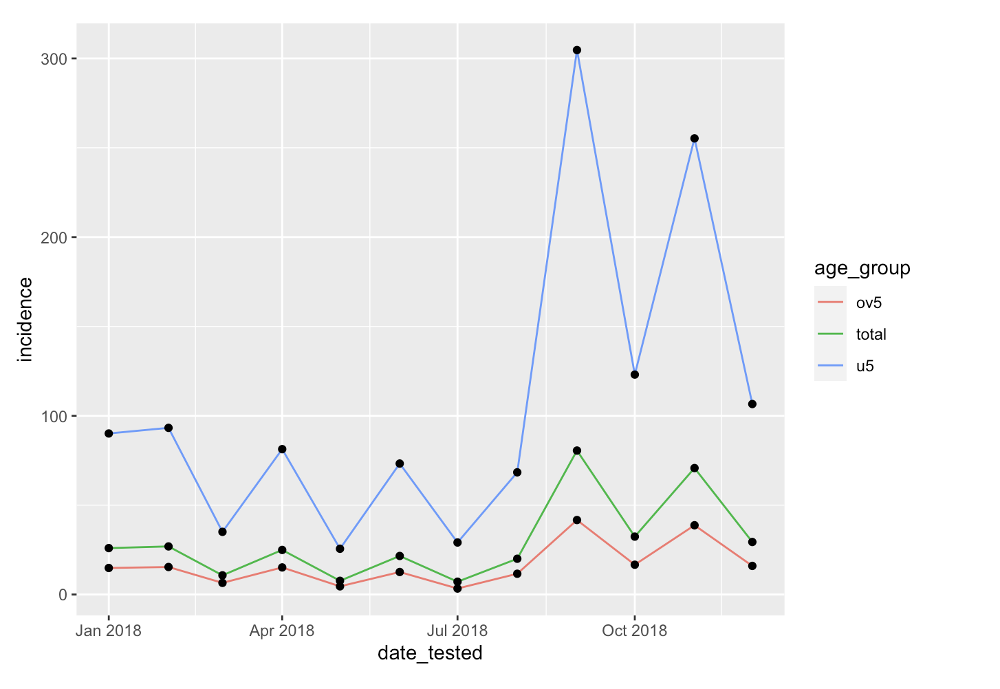

remove(list=objects())
library(tidyverse)
library(ggplot2)
library(gridExtra)Making Plots with ggplot2
Data Manipulation
In this first section we aim to perform data cleaning and manipulate the data to a subset that will be usefull to our analysis. We aim to have a small subset that that we will use it for our visualization section. Using dplyr package in R to perform data filtering,renaming, sample,arrange/sort,creating new columns and summarising the large dataset.
Tip
The beauty of the dplyr package is its functions are easy to learn and remember eg. for filtering the data we use filter()
We start by cleaning the enviroment and calling the library we intend to use in the analysis
Our dataset is a csv file we read the data using the directory/path and name it df
df<- read.csv("C:/Users/shirgl/Desktop/SwissTPH/Trainings/NIMRI_MAPEA/Amelia_vis_workshop/clean_routine_data.csv")Data Cleaning
Aim:
- Identify the Null and Duplicates in the dataset
- Clean the dataset by removing Null entries and Duplicates
Find and count missing Values
When we clean dataset, we check if there empty entries, duplicates, outliers and ensure we deal with all these before begining your analysis or visualization.
# in the whole data set
is.na(df)
#sum of null
sum(is.na(df))
colSums(is.na(df))
# in a specific column
which(is.na(df$test_total))can be solved by droping the observation and sometimes replacing with 999. we will drop the row with one entry that has an NA
df_NAomitted<- na.omit(df)
df2_NAommited<- df %>% drop_na()Finding Duplicates and dealing with them
Some observations can be a complete duplicate, this means all the column entries are similar. To deal with duplicates we take the unique observations in the dataset.
checking for duplicates and dropping
duplicated(df)
sum(duplicated(df))#remove duplicate by unique or distinct
df_clean<-unique(df_NAomitted)A function dinstict() can be used to deal with duplicates removing a whole observation that is duplicated or a variable with duplicate.
Rename, select, filter
Aim:
- Filter the observations with quantitative and qualitative options
- select variables from the dataset
- Rename the variables

There multiple ways to select specific variable in the dataset, we will use select() functions with syntax
select(data , ....)
select(df_clean,adm1)
select(df,adm1,date_tested:conf_u5)
select(df,-date_tested)
select(df,-c(date_tested,adm1,adm2))
select(df_clean,starts_with("A"))
Exercise:
Create a subset data from the df_clean that has admin1 with all the test variables
Solution:
select(df_clean,c(adm1,starts_with("tes"))) adm1 test_total test_u5 test_ov5
1 Central 223 111 112
3 Central 120 59 61
4 Central 152 78 74
5 Central 97 48 49
7 Central 272 134 138
8 Central 797 383 414
9 Central 494 226 268
10 Central 1134 527 607
11 Central 555 263 292
12 Central 828 401 427
13 Central 312 155 157
14 Central 627 298 329
15 Central 721 347 374
16 Central 663 308 355
17 Central 795 379 416
18 Central 604 290 314
19 Central 993 457 536
20 Central 999 467 532
21 Central 390 176 214
22 Central 2145 961 1184
23 Central 2675 1180 1495
24 Central 366 166 200
25 Central 1564 732 832
26 Central 688 287 401
27 Central 1360 562 798
28 Central 1859 795 1064
29 Central 1629 757 872
30 Central 554 244 310
31 Central 566 256 310
32 Central 2059 901 1158
33 Central 2895 1146 1749
34 Central 2259 859 1400
35 Central 296 100 196
36 Central 1251 450 801
37 Central 2147 859 1288
38 Central 343 167 176
39 Central 100 50 50
40 Central 135 68 67
41 Central 76 38 38
42 Central 341 166 175
43 Central 198 96 102
44 Central 133 65 68
45 Central 494 229 265
46 Central 805 386 419
47 Central 479 236 243
48 Central 1025 501 524
49 Central 661 333 328
50 Central 887 411 476
51 Central 237 114 123
52 Central 760 359 401
53 Central 593 284 309
54 Central 681 325 356
55 Central 732 352 380
56 Central 2122 1006 1116
57 Central 1371 623 748
58 Central 1686 752 934
59 Central 1572 699 873
60 Central 2234 1013 1221
61 Central 1272 595 677
62 Central 504 248 256
63 Central 393 192 201
64 Central 162 80 82
65 Central 296 145 151
66 Central 351 167 184
67 Central 280 136 144
68 Central 1259 613 646
69 Central 1196 522 674
70 Central 1283 583 700
71 Central 529 246 283
72 Central 458 214 244
73 Central 1072 523 549
74 Central 962 454 508
75 Central 293 141 152
76 Central 293 141 152
77 Central 492 241 251
78 Central 676 328 348
79 Central 391 192 199
80 Central 952 461 491
81 Central 386 177 209
82 Central 1111 517 594
83 Central 1190 534 656
84 Central 903 415 488
85 Central 995 475 520
86 Central 1105 486 619
87 Central 815 391 424
88 Central 786 368 418
89 Central 1422 670 752
90 Central 963 474 489
91 Central 1139 532 607
92 Central 1869 857 1012
93 Central 2213 998 1215
94 Central 1882 838 1044
95 Central 701 283 418
96 Central 1088 471 617
97 Central 1013 462 551
98 East 383 183 200
99 East 147 72 75
100 East 634 314 320
101 East 264 129 135
102 East 336 169 167
103 East 551 269 282
104 East 656 316 340
105 East 595 270 325
106 East 1205 545 660
107 East 574 265 309
108 East 742 345 397
109 East 553 267 286
110 East 118 59 59
111 East 189 94 95
112 East 342 173 169
113 East 133 66 67
114 East 257 128 129
115 East 604 300 304
116 East 561 274 287
117 East 1223 587 636
118 East 1093 544 549
119 East 1222 609 613
120 East 747 373 374
121 East 925 463 462
122 East 319 164 155
123 East 193 98 95
124 East 333 170 163
125 East 327 163 164
126 East 854 437 417
127 East 459 233 226
128 East 1476 744 732
129 East 886 428 458
130 East 1604 809 795
131 East 914 475 439
132 East 875 449 426
133 East 1628 854 774
134 East 309 153 156
135 East 112 56 56
136 East 126 63 63
137 East 264 131 133
138 East 144 72 72
139 East 94 47 47
140 East 287 145 142
141 East 575 271 304
142 East 518 236 282
143 East 153 69 84
144 East 385 181 204
145 East 260 125 135
146 East 705 353 352
147 East 537 267 270
148 East 366 185 181
149 East 445 227 218
150 East 167 82 85
151 East 408 202 206
152 East 910 436 474
153 East 863 408 455
154 East 371 178 193
155 East 1292 621 671
156 East 1010 493 517
157 East 688 347 341
158 East 818 415 403
159 East 896 455 441
160 East 324 164 160
161 East 753 375 378
162 East 208 103 105
163 East 549 270 279
164 East 237 117 120
165 East 642 314 328
166 East 1892 939 953
167 East 1064 536 528
168 East 1729 878 851
169 East 813 400 413
170 East 200 96 104
171 East 515 253 262
172 East 448 221 227
173 East 167 83 84
174 East 420 206 214
175 East 247 122 125
176 East 1163 570 593
177 East 858 388 470
178 East 1492 687 805
179 East 535 258 277
180 East 545 262 283
181 East 375 177 198
182 East 74 37 37
183 East 335 165 170
184 East 182 90 92
185 East 141 70 71
186 East 216 107 109
187 East 175 86 89
188 East 645 315 330
189 East 271 131 140
190 East 498 241 257
191 East 399 197 202
192 East 373 185 188
193 East 468 237 231
194 East 202 96 106
195 East 729 347 382
196 East 134 65 69
197 East 642 310 332
198 East 188 89 99
199 East 525 259 266
200 East 1320 657 663
201 East 1401 677 724
202 East 719 341 378
203 East 1327 618 709
204 East 899 431 468
205 East 482 231 251
206 East 1680 844 836
207 East 799 403 396
208 East 919 458 461
209 East 1535 782 753
210 East 127 73 54
211 East 1280 639 641
212 East 1333 667 666
213 East 2047 1025 1022
214 East 2795 1375 1420
215 East 1714 851 863
216 East 1450 719 731
217 East 2145 1075 1070
218 North Coast 439 217 222
219 North Coast 685 341 344
220 North Coast 735 369 366
221 North Coast 1183 589 594
222 North Coast 744 375 369
223 North Coast 634 316 318
224 North Coast 1331 652 679
225 North Coast 951 440 511
226 North Coast 2676 1247 1429
227 North Coast 1599 749 850
228 North Coast 1178 553 625
229 North Coast 2540 1286 1254
230 North Coast 169 81 88
231 North Coast 172 83 89
232 North Coast 365 176 189
233 North Coast 1199 582 617
234 North Coast 37 18 19
235 North Coast 594 279 315
236 North Coast 609 294 315
237 North Coast 536 244 292
238 North Coast 981 452 529
239 North Coast 140 66 74
240 North Coast 624 296 328
241 North Coast 681 336 345
242 North Coast 235 111 124
243 North Coast 201 95 106
244 North Coast 225 104 121
245 North Coast 192 90 102
246 North Coast 401 188 213
247 North Coast 513 239 274
248 North Coast 539 229 310
249 North Coast 90 39 51
250 North Coast 751 350 401
251 North Coast 1202 613 589
252 North Coast 1570 801 769
253 North Coast 919 465 454
254 North Coast 1110 568 542
255 North Coast 875 443 432
256 North Coast 822 412 410
257 North Coast 2266 1126 1140
258 North Coast 2306 1078 1228
259 North Coast 3271 1551 1720
260 North Coast 1711 819 892
261 North Coast 3882 1925 1957
262 North Coast 1427 722 705
263 North Coast 421 212 209
264 North Coast 370 186 184
265 North Coast 74 38 36
266 North Coast 188 95 93
267 North Coast 271 136 135
268 North Coast 162 80 82
269 North Coast 189 94 95
270 North Coast 540 243 297
271 North Coast 769 340 429
272 North Coast 729 334 395
273 North Coast 327 158 169
274 North Coast 648 328 320
275 North Coast 77 39 38
276 North Coast 81 40 41
277 North Coast 93 46 47
278 North Coast 184 90 94
279 North Coast 219 105 114
280 North Coast 82 40 42
281 North Coast 656 326 330
282 North Coast 497 240 257
283 North Coast 667 326 341
284 North Coast 613 307 306
285 North Coast 370 187 183
286 North Coast 529 243 286
287 North Coast 695 326 369
288 North Coast 382 184 198
289 North Coast 258 126 132
290 North Coast 486 232 254
291 North Coast 692 334 358
292 North Coast 595 285 310
293 North Coast 868 382 486
294 North Coast 483 214 269
295 North Coast 1405 625 780
296 North Coast 347 159 188
297 North Coast 944 453 491
298 North Coast 400 191 209
299 North Coast 530 262 268
300 North Coast 530 263 267
301 North Coast 160 77 83
302 North Coast 524 262 262
303 North Coast 424 210 214
304 North Coast 1093 523 570
305 North Coast 1047 468 579
306 North Coast 488 221 267
307 North Coast 895 401 494
308 North Coast 1705 767 938
309 North Coast 741 356 385
310 North Coast 538 259 279
311 North Coast 209 101 108
312 North Coast 429 211 218
313 North Coast 482 238 244
314 North Coast 167 83 84
315 North Coast 441 211 230
316 North Coast 644 310 334
317 North Coast 572 255 317
318 North Coast 991 461 530
319 North Coast 593 282 311
320 North Coast 172 84 88
321 North Coast 705 347 358
322 Plains 483 235 248
323 Plains 461 227 234
324 Plains 417 206 211
325 Plains 441 215 226
326 Plains 677 330 347
327 Plains 253 122 131
328 Plains 1311 624 687
329 Plains 315 141 174
330 Plains 930 427 503
331 Plains 401 187 214
332 Plains 1194 562 632
333 Plains 1093 536 557
334 Plains 127 65 62
335 Plains 111 55 56
336 Plains 394 194 200
337 Plains 145 72 73
338 Plains 381 188 193
339 Plains 185 93 92
340 Plains 465 231 234
341 Plains 308 157 151
342 Plains 383 196 187
343 Plains 628 343 285
344 Plains 123 60 63
345 Plains 147 72 75
346 Plains 83 42 41
347 Plains 560 281 279
348 Plains 210 104 106
349 Plains 152 73 79
350 Plains 372 171 201
351 Plains 264 124 140
352 Plains 513 237 276
353 Plains 660 323 337
354 Plains 591 298 293
355 Plains 562 281 281
356 Plains 349 173 176
357 Plains 350 176 174
358 Plains 104 49 55
359 Plains 86 43 43
360 Plains 62 31 31
361 Plains 189 93 96
362 Plains 299 150 149
363 Plains 575 291 284
364 Plains 240 121 119
365 Plains 346 173 173
366 Plains 374 179 195
367 Plains 332 158 174
368 Plains 83 40 43
369 Plains 153 74 79
370 Plains 176 87 89
371 Plains 97 47 50
372 Plains 101 49 52
373 Plains 136 61 75
374 Plains 186 87 99
375 Plains 397 185 212
376 Plains 246 117 129
377 Plains 305 150 155
378 Plains 400 198 202
379 Plains 464 233 231
380 Plains 698 345 353
381 Plains 780 384 396
382 Plains 297 147 150
383 Plains 710 349 361
384 Plains 684 319 365
385 Plains 435 207 228
386 Plains 714 348 366
387 Plains 981 483 498
388 Plains 1040 530 510
389 Plains 212 110 102
390 Plains 187 93 94
391 Plains 276 140 136
392 Plains 88 44 44
393 Plains 212 105 107
394 Plains 166 83 83
395 Plains 351 174 177
396 Plains 618 308 310
397 Plains 465 234 231
398 Plains 361 183 178
399 Plains 434 221 213
400 Plains 416 212 204
401 Plains 753 383 370
402 Plains 498 257 241
403 Plains 715 359 356
404 Plains 427 214 213
405 Plains 800 397 403
406 Plains 511 255 256
407 Plains 1209 603 606
408 Plains 1163 588 575
409 Plains 1419 724 695
410 Plains 1167 604 563
411 Plains 1574 818 756
412 West 1056 503 553
413 West 834 400 434
414 West 779 372 407
415 West 554 272 282
416 West 563 273 290
417 West 902 436 466
418 West 861 410 451
419 West 1498 688 810
420 West 1121 505 616
421 West 2173 944 1229
422 West 815 361 454
423 West 1143 544 599
424 West 236 117 119
425 West 297 149 148
426 West 197 100 97
427 West 122 60 62
428 West 109 55 54
429 West 429 211 218
430 West 1228 588 640
431 West 367 173 194
432 West 162 77 85
433 West 185 92 93
434 West 696 353 343
435 West 144 71 73
436 West 359 174 185
437 West 244 123 121
438 West 315 159 156
439 West 307 150 157
440 West 213 105 108
441 West 373 180 193
442 West 572 265 307
443 West 679 319 360
444 West 789 364 425
445 West 420 205 215
446 West 157 79 78
447 West 273 136 137
448 West 627 316 311
449 West 510 258 252
450 West 319 160 159
451 West 242 121 121
452 West 1007 515 492
453 West 618 306 312
454 West 781 390 391
455 West 704 349 355
456 West 321 160 161
457 West 887 445 442
458 West 337 174 163
459 West 365 188 177
460 West 214 109 105
461 West 817 415 402
462 West 355 179 176
463 West 313 157 156
464 West 807 402 405
465 West 883 442 441
466 West 449 220 229
467 West 1131 567 564
468 West 1492 766 726
469 West 1126 578 548
470 West 1049 520 529
471 West 1292 632 660
472 West 1593 790 803
473 West 1244 625 619
474 West 1217 602 615
475 West 1261 624 637
476 West 1629 801 828
477 West 2481 1157 1324
478 West 2974 1412 1562
479 West 1867 896 971
480 West 2329 1144 1185
481 West 2628 1321 1307
482 West 505 244 261
483 West 1106 536 570
484 West 795 393 402
485 West 69 34 35
486 West 542 269 273
487 West 786 388 398
488 West 962 473 489
489 West 671 313 358
490 West 1266 583 683
491 West 1855 851 1004
492 West 1269 598 671
493 West 538 265 273
494 West 340 173 167
495 West 295 152 143
496 West 305 156 149
497 West 334 169 165
498 West 169 84 85
499 West 512 257 255
500 West 243 119 124
501 West 794 396 398
502 West 559 279 280
503 West 332 170 162
504 West 227 109 118
505 West 880 418 462
506 West 398 191 207
507 West 663 317 346
508 West 102 50 52
509 West 701 334 367
510 West 751 359 392
511 West 645 292 353
512 West 1292 586 706
513 West 1087 479 608
514 West 1023 458 565
515 West 859 409 450
516 West 114 56 58
517 West 218 106 112
518 West 240 118 122
519 West 204 102 102
520 West 123 60 63
521 West 184 88 96
522 West 533 259 274
523 West 375 174 201
524 West 368 169 199
525 West 348 167 181
526 West 348 164 184
527 West 118 56 62
528 West 120 57 63
529 West 307 145 162
530 West 200 95 105
531 West 167 78 89
532 West 213 103 110
533 West 698 327 371
534 West 617 288 329
535 West 118 55 63
536 West 377 174 203
537 West 548 259 289Filtering observations based on their values can be done with the filter() function. This function works on both quantitative and qualitative variables. with syntax of :
filter(data , ....)
filter(df_clean,adm1=="East")
filter(df_clean,test_total<250)
filter(df_clean, adm1==c("East","West"))
filter(df_clean,adm1=="West" & adm2=="Bamakiary")
Exercise:
create a subset data from the df_clean by filtering the adm1 east and total confirmed cases greater than 500
Solution:
filter(df_clean, adm1=="East"& conf_total>500) adm1 adm2 date_tested test_total test_u5 test_ov5 conf_total conf_u5
1 East Dakoga 9/1/2018 1205 545 660 883 315
2 East Dakoga 11/1/2018 742 345 397 551 216
3 East Gakingo 8/1/2018 1223 587 636 1028 483
4 East Gakingo 9/1/2018 1093 544 549 781 407
5 East Gakingo 10/1/2018 1222 609 613 941 476
6 East Gakingo 11/1/2018 747 373 374 519 255
7 East Gakingo 12/1/2018 925 463 462 654 337
8 East Galkashiikh 5/1/2018 854 437 417 512 222
9 East Galkashiikh 7/1/2018 1476 744 732 1082 546
10 East Galkashiikh 8/1/2018 886 428 458 613 287
11 East Galkashiikh 9/1/2018 1604 809 795 1256 659
12 East Galkashiikh 10/1/2018 914 475 439 572 318
13 East Galkashiikh 11/1/2018 875 449 426 599 299
14 East Galkashiikh 12/1/2018 1628 854 774 1264 674
15 East Lamanya 7/1/2018 910 436 474 635 270
16 East Lamanya 8/1/2018 863 408 455 603 222
17 East Lamanya 10/1/2018 1292 621 671 917 385
18 East Lamanya 11/1/2018 1010 493 517 723 296
19 East Lamanya 12/1/2018 688 347 341 525 273
20 East Mabangata 1/1/2018 818 415 403 501 257
21 East Mabangata 2/1/2018 896 455 441 519 266
22 East Mabangata 9/1/2018 1892 939 953 1554 869
23 East Mabangata 10/1/2018 1064 536 528 625 351
24 East Mabangata 11/1/2018 1729 878 851 1365 728
25 East Mabangata 12/1/2018 813 400 413 567 304
26 East Marandre 7/1/2018 1163 570 593 876 440
27 East Marandre 8/1/2018 858 388 470 655 220
28 East Marandre 9/1/2018 1492 687 805 1080 407
29 East Tchimari 7/1/2018 1320 657 663 849 454
30 East Tchimari 8/1/2018 1401 677 724 1053 461
31 East Tchimari 9/1/2018 719 341 378 528 224
32 East Tchimari 10/1/2018 1327 618 709 966 412
33 East Tchimari 11/1/2018 899 431 468 674 281
34 East Yorolesse 1/1/2018 1680 844 836 971 469
35 East Yorolesse 3/1/2018 919 458 461 572 245
36 East Yorolesse 4/1/2018 1535 782 753 667 272
37 East Yorolesse 6/1/2018 1280 639 641 829 359
38 East Yorolesse 7/1/2018 1333 667 666 941 545
39 East Yorolesse 8/1/2018 2047 1025 1022 1513 692
40 East Yorolesse 9/1/2018 2795 1375 1420 2103 1016
41 East Yorolesse 10/1/2018 1714 851 863 1144 573
42 East Yorolesse 11/1/2018 1450 719 731 1084 528
43 East Yorolesse 12/1/2018 2145 1075 1070 1518 777
conf_ov5
1 568
2 335
3 545
4 374
5 465
6 264
7 317
8 290
9 536
10 326
11 597
12 254
13 300
14 590
15 365
16 381
17 532
18 427
19 252
20 244
21 253
22 685
23 274
24 637
25 263
26 436
27 435
28 673
29 395
30 592
31 304
32 554
33 393
34 502
35 327
36 395
37 470
38 396
39 821
40 1087
41 571
42 556
43 741The rename() function is used to change variable name. with a syntax of:
rename(data , new_name = old_name)
rename(df_clean, date=date_tested)pipe
Aim:
- To ensure we combine different functions in one command using pipe
- Create new variables
Using pipe operator ( %>% ) allows you to write sub-queries like we do it in sql. Functions can be written without pipe operator but this helps us to wrap multiple functions together at one command. Syntax data %\>% functions
#instead of writing
filter(df_clean, adm1 == "East")
#we use
df_clean %>% filter(adm1 == "East")df_clean %>% select(adm1,adm2) %>%
rename(admin_country=adm1) %>%
filter(adm2=="Buoadara") admin_country adm2
1 Central Buoadara
2 Central Buoadara
3 Central Buoadara
4 Central Buoadara
5 Central Buoadara
6 Central Buoadara
7 Central Buoadara
8 Central Buoadara
9 Central Buoadara
10 Central Buoadara
11 Central Buoadaraconnected operations
In dplyr some operations are connected, with group by function instead of showing all the groups/ categories one by one it gives you the groups available and with summarise() function you are able to display various statistical results of the groups. ::: panel-tabset
group_by
The group_by() function is used to group data by categorical variable(s).
df_clean %>% group_by(adm1) %>% summarise(n())# A tibble: 5 2
adm1 `n()`
<chr> <int>
1 Central 95
2 East 120
3 North Coast 104
4 Plains 90
5 West 126df_clean %>%
group_by(adm1) %>%
summarise(sum_conf=max(conf_total))# A tibble: 5 2
adm1 sum_conf
<chr> <int>
1 Central 2098
2 East 2103
3 North Coast 2732
4 Plains 1133
5 West 2206summarise
in the summarise function we can have counts - n(),sum - sum(),average - mean(),max - max() etc
Exercise:
using pipe create a subset of data that has adm1,adm2,date_tested,conf_total. Then filter to include the conf_total greate than 100, group by adm2 and display the average of the confirmed cases, lastly remane the adm2 to region_level
Solution:
df_clean %>% select(adm1,adm2,date_tested,conf_total) %>%
filter(conf_total>100) %>%
group_by(adm2) %>%
summarise(mean_case=mean(conf_total)) %>%
rename(region_level=adm2)# A tibble: 46 2
region_level mean_case
<chr> <dbl>
1 Bamakiary 670.
2 Bonmi 469.
3 Buoadara 388.
4 Buseli 818.
5 Bwiziwo 377.
6 Cadagudeey 309.
7 Cakure 291.
8 Caya 267.
9 Dakoga 373.
10 Gakingo 491.
# 36 more rowsmutate
This function allows you to create a new variable in the data set, it can relate to the other variables or not.
creating a new variable confirmed cases per 1000
df_clean %>% mutate(case_per_1000 = conf_total/1000)
Exercise:
create a new variable name it combined in the df_clean dataset with the sum of total test and total confirmed cases
Solution:
df_clean %>% mutate(combined= (conf_total + test_total)) adm1 adm2 date_tested test_total test_u5 test_ov5 conf_total
1 Central Buoadara 1/1/2018 223 111 112 215
3 Central Buoadara 3/1/2018 120 59 61 75
4 Central Buoadara 4/1/2018 152 78 74 107
5 Central Buoadara 5/1/2018 97 48 49 68
7 Central Buoadara 6/1/2018 272 134 138 188
8 Central Buoadara 7/1/2018 797 383 414 572
9 Central Buoadara 8/1/2018 494 226 268 406
10 Central Buoadara 9/1/2018 1134 527 607 925
11 Central Buoadara 10/1/2018 555 263 292 387
12 Central Buoadara 11/1/2018 828 401 427 515
13 Central Buoadara 12/1/2018 312 155 157 175
14 Central Laoye 1/1/2018 627 298 329 392
15 Central Laoye 2/1/2018 721 347 374 441
16 Central Laoye 3/1/2018 663 308 355 446
17 Central Laoye 4/1/2018 795 379 416 412
18 Central Laoye 5/1/2018 604 290 314 393
19 Central Laoye 6/1/2018 993 457 536 607
20 Central Laoye 7/1/2018 999 467 532 777
21 Central Laoye 8/1/2018 390 176 214 315
22 Central Laoye 9/1/2018 2145 961 1184 1603
23 Central Laoye 10/1/2018 2675 1180 1495 1968
24 Central Laoye 11/1/2018 366 166 200 272
25 Central Laoye 12/1/2018 1564 732 832 1149
26 Central Mbono 1/1/2018 688 287 401 356
27 Central Mbono 2/1/2018 1360 562 798 1066
28 Central Mbono 3/1/2018 1859 795 1064 894
29 Central Mbono 4/1/2018 1629 757 872 1120
30 Central Mbono 5/1/2018 554 244 310 404
31 Central Mbono 6/1/2018 566 256 310 363
32 Central Mbono 7/1/2018 2059 901 1158 1460
33 Central Mbono 8/1/2018 2895 1146 1749 2098
34 Central Mbono 9/1/2018 2259 859 1400 1448
35 Central Mbono 10/1/2018 296 100 196 186
36 Central Mbono 11/1/2018 1251 450 801 954
37 Central Mbono 12/1/2018 2147 859 1288 1680
38 Central Namaba 1/1/2018 343 167 176 186
39 Central Namaba 2/1/2018 100 50 50 46
40 Central Namaba 3/1/2018 135 68 67 95
41 Central Namaba 4/1/2018 76 38 38 46
42 Central Namaba 5/1/2018 341 166 175 184
43 Central Namaba 6/1/2018 198 96 102 149
44 Central Namaba 7/1/2018 133 65 68 86
45 Central Namaba 8/1/2018 494 229 265 367
46 Central Namaba 9/1/2018 805 386 419 516
47 Central Namaba 10/1/2018 479 236 243 418
48 Central Namaba 11/1/2018 1025 501 524 720
49 Central Namaba 12/1/2018 661 333 328 497
50 Central Niaya 1/1/2018 887 411 476 560
51 Central Niaya 2/1/2018 237 114 123 175
52 Central Niaya 3/1/2018 760 359 401 465
53 Central Niaya 4/1/2018 593 284 309 416
54 Central Niaya 5/1/2018 681 325 356 405
55 Central Niaya 6/1/2018 732 352 380 452
56 Central Niaya 7/1/2018 2122 1006 1116 1569
57 Central Niaya 8/1/2018 1371 623 748 967
58 Central Niaya 9/1/2018 1686 752 934 1167
59 Central Niaya 10/1/2018 1572 699 873 1240
60 Central Niaya 11/1/2018 2234 1013 1221 1581
61 Central Niaya 12/1/2018 1272 595 677 1047
62 Central Siago 1/1/2018 504 248 256 333
63 Central Siago 2/1/2018 393 192 201 248
64 Central Siago 3/1/2018 162 80 82 118
65 Central Siago 4/1/2018 296 145 151 165
66 Central Siago 5/1/2018 351 167 184 299
67 Central Siago 6/1/2018 280 136 144 174
68 Central Siago 7/1/2018 1259 613 646 947
69 Central Siago 8/1/2018 1196 522 674 780
70 Central Siago 9/1/2018 1283 583 700 1039
71 Central Siago 10/1/2018 529 246 283 438
72 Central Siago 11/1/2018 458 214 244 336
73 Central Siago 12/1/2018 1072 523 549 706
74 Central Winnedua 1/1/2018 962 454 508 637
75 Central Winnedua 2/1/2018 293 141 152 245
76 Central Winnedua 3/1/2018 293 141 152 223
77 Central Winnedua 4/1/2018 492 241 251 273
78 Central Winnedua 5/1/2018 676 328 348 392
79 Central Winnedua 6/1/2018 391 192 199 307
80 Central Winnedua 7/1/2018 952 461 491 677
81 Central Winnedua 8/1/2018 386 177 209 277
82 Central Winnedua 9/1/2018 1111 517 594 800
83 Central Winnedua 10/1/2018 1190 534 656 867
84 Central Winnedua 11/1/2018 903 415 488 654
85 Central Winnedua 12/1/2018 995 475 520 732
86 Central Yagoloko 1/1/2018 1105 486 619 878
87 Central Yagoloko 2/1/2018 815 391 424 405
88 Central Yagoloko 3/1/2018 786 368 418 526
89 Central Yagoloko 4/1/2018 1422 670 752 888
90 Central Yagoloko 5/1/2018 963 474 489 537
91 Central Yagoloko 6/1/2018 1139 532 607 491
92 Central Yagoloko 7/1/2018 1869 857 1012 1320
93 Central Yagoloko 8/1/2018 2213 998 1215 1495
94 Central Yagoloko 9/1/2018 1882 838 1044 1197
95 Central Yagoloko 10/1/2018 701 283 418 539
96 Central Yagoloko 11/1/2018 1088 471 617 727
97 Central Yagoloko 12/1/2018 1013 462 551 732
98 East Dakoga 1/1/2018 383 183 200 202
99 East Dakoga 2/1/2018 147 72 75 115
100 East Dakoga 3/1/2018 634 314 320 367
101 East Dakoga 4/1/2018 264 129 135 106
102 East Dakoga 5/1/2018 336 169 167 177
103 East Dakoga 6/1/2018 551 269 282 250
104 East Dakoga 7/1/2018 656 316 340 499
105 East Dakoga 8/1/2018 595 270 325 476
106 East Dakoga 9/1/2018 1205 545 660 883
107 East Dakoga 10/1/2018 574 265 309 422
108 East Dakoga 11/1/2018 742 345 397 551
109 East Dakoga 12/1/2018 553 267 286 424
110 East Gakingo 1/1/2018 118 59 59 52
111 East Gakingo 2/1/2018 189 94 95 113
112 East Gakingo 3/1/2018 342 173 169 186
113 East Gakingo 4/1/2018 133 66 67 43
114 East Gakingo 5/1/2018 257 128 129 107
115 East Gakingo 6/1/2018 604 300 304 226
116 East Gakingo 7/1/2018 561 274 287 359
117 East Gakingo 8/1/2018 1223 587 636 1028
118 East Gakingo 9/1/2018 1093 544 549 781
119 East Gakingo 10/1/2018 1222 609 613 941
120 East Gakingo 11/1/2018 747 373 374 519
121 East Gakingo 12/1/2018 925 463 462 654
122 East Galkashiikh 1/1/2018 319 164 155 241
123 East Galkashiikh 2/1/2018 193 98 95 145
124 East Galkashiikh 3/1/2018 333 170 163 234
125 East Galkashiikh 4/1/2018 327 163 164 243
126 East Galkashiikh 5/1/2018 854 437 417 512
127 East Galkashiikh 6/1/2018 459 233 226 223
128 East Galkashiikh 7/1/2018 1476 744 732 1082
129 East Galkashiikh 8/1/2018 886 428 458 613
130 East Galkashiikh 9/1/2018 1604 809 795 1256
131 East Galkashiikh 10/1/2018 914 475 439 572
132 East Galkashiikh 11/1/2018 875 449 426 599
133 East Galkashiikh 12/1/2018 1628 854 774 1264
134 East Guinikoto 1/1/2018 309 153 156 189
135 East Guinikoto 2/1/2018 112 56 56 77
136 East Guinikoto 3/1/2018 126 63 63 61
137 East Guinikoto 4/1/2018 264 131 133 168
138 East Guinikoto 5/1/2018 144 72 72 95
139 East Guinikoto 6/1/2018 94 47 47 79
140 East Guinikoto 7/1/2018 287 145 142 193
141 East Guinikoto 8/1/2018 575 271 304 393
142 East Guinikoto 9/1/2018 518 236 282 351
143 East Guinikoto 10/1/2018 153 69 84 115
144 East Guinikoto 11/1/2018 385 181 204 316
145 East Guinikoto 12/1/2018 260 125 135 188
146 East Lamanya 1/1/2018 705 353 352 492
147 East Lamanya 2/1/2018 537 267 270 309
148 East Lamanya 3/1/2018 366 185 181 216
149 East Lamanya 4/1/2018 445 227 218 357
150 East Lamanya 5/1/2018 167 82 85 125
151 East Lamanya 6/1/2018 408 202 206 262
152 East Lamanya 7/1/2018 910 436 474 635
153 East Lamanya 8/1/2018 863 408 455 603
154 East Lamanya 9/1/2018 371 178 193 257
155 East Lamanya 10/1/2018 1292 621 671 917
156 East Lamanya 11/1/2018 1010 493 517 723
157 East Lamanya 12/1/2018 688 347 341 525
158 East Mabangata 1/1/2018 818 415 403 501
159 East Mabangata 2/1/2018 896 455 441 519
160 East Mabangata 3/1/2018 324 164 160 207
161 East Mabangata 4/1/2018 753 375 378 481
162 East Mabangata 5/1/2018 208 103 105 148
163 East Mabangata 6/1/2018 549 270 279 416
164 East Mabangata 7/1/2018 237 117 120 138
165 East Mabangata 8/1/2018 642 314 328 386
166 East Mabangata 9/1/2018 1892 939 953 1554
167 East Mabangata 10/1/2018 1064 536 528 625
168 East Mabangata 11/1/2018 1729 878 851 1365
169 East Mabangata 12/1/2018 813 400 413 567
170 East Marandre 1/1/2018 200 96 104 158
171 East Marandre 2/1/2018 515 253 262 360
172 East Marandre 3/1/2018 448 221 227 320
173 East Marandre 4/1/2018 167 83 84 103
174 East Marandre 5/1/2018 420 206 214 311
175 East Marandre 6/1/2018 247 122 125 160
176 East Marandre 7/1/2018 1163 570 593 876
177 East Marandre 8/1/2018 858 388 470 655
178 East Marandre 9/1/2018 1492 687 805 1080
179 East Marandre 10/1/2018 535 258 277 404
180 East Marandre 11/1/2018 545 262 283 358
181 East Marandre 12/1/2018 375 177 198 194
182 East Siabakala 1/1/2018 74 37 37 41
183 East Siabakala 2/1/2018 335 165 170 174
184 East Siabakala 3/1/2018 182 90 92 140
185 East Siabakala 4/1/2018 141 70 71 107
186 East Siabakala 5/1/2018 216 107 109 118
187 East Siabakala 6/1/2018 175 86 89 133
188 East Siabakala 7/1/2018 645 315 330 418
189 East Siabakala 8/1/2018 271 131 140 160
190 East Siabakala 9/1/2018 498 241 257 225
191 East Siabakala 10/1/2018 399 197 202 335
192 East Siabakala 11/1/2018 373 185 188 318
193 East Siabakala 12/1/2018 468 237 231 370
194 East Tchimari 1/1/2018 202 96 106 115
195 East Tchimari 2/1/2018 729 347 382 486
196 East Tchimari 3/1/2018 134 65 69 81
197 East Tchimari 4/1/2018 642 310 332 355
198 East Tchimari 5/1/2018 188 89 99 103
199 East Tchimari 6/1/2018 525 259 266 231
200 East Tchimari 7/1/2018 1320 657 663 849
201 East Tchimari 8/1/2018 1401 677 724 1053
202 East Tchimari 9/1/2018 719 341 378 528
203 East Tchimari 10/1/2018 1327 618 709 966
204 East Tchimari 11/1/2018 899 431 468 674
205 East Tchimari 12/1/2018 482 231 251 390
206 East Yorolesse 1/1/2018 1680 844 836 971
207 East Yorolesse 2/1/2018 799 403 396 451
208 East Yorolesse 3/1/2018 919 458 461 572
209 East Yorolesse 4/1/2018 1535 782 753 667
210 East Yorolesse 5/1/2018 127 73 54 61
211 East Yorolesse 6/1/2018 1280 639 641 829
212 East Yorolesse 7/1/2018 1333 667 666 941
213 East Yorolesse 8/1/2018 2047 1025 1022 1513
214 East Yorolesse 9/1/2018 2795 1375 1420 2103
215 East Yorolesse 10/1/2018 1714 851 863 1144
216 East Yorolesse 11/1/2018 1450 719 731 1084
217 East Yorolesse 12/1/2018 2145 1075 1070 1518
218 North Coast Buseli 1/1/2018 439 217 222 260
219 North Coast Buseli 2/1/2018 685 341 344 417
220 North Coast Buseli 3/1/2018 735 369 366 395
221 North Coast Buseli 4/1/2018 1183 589 594 783
222 North Coast Buseli 5/1/2018 744 375 369 509
223 North Coast Buseli 6/1/2018 634 316 318 404
224 North Coast Buseli 7/1/2018 1331 652 679 866
225 North Coast Buseli 8/1/2018 951 440 511 699
226 North Coast Buseli 9/1/2018 2676 1247 1429 1902
227 North Coast Buseli 10/1/2018 1599 749 850 1104
228 North Coast Buseli 11/1/2018 1178 553 625 736
229 North Coast Buseli 12/1/2018 2540 1286 1254 1738
230 North Coast Bwiziwo 1/1/2018 169 81 88 109
231 North Coast Bwiziwo 2/1/2018 172 83 89 79
232 North Coast Bwiziwo 3/1/2018 365 176 189 228
233 North Coast Bwiziwo 4/1/2018 1199 582 617 593
234 North Coast Bwiziwo 5/1/2018 37 18 19 13
235 North Coast Bwiziwo 6/1/2018 594 279 315 255
236 North Coast Bwiziwo 7/1/2018 609 294 315 471
237 North Coast Bwiziwo 8/1/2018 536 244 292 218
238 North Coast Bwiziwo 9/1/2018 981 452 529 618
239 North Coast Bwiziwo 10/1/2018 140 66 74 99
240 North Coast Bwiziwo 11/1/2018 624 296 328 397
241 North Coast Bwiziwo 12/1/2018 681 336 345 505
242 North Coast Kanyabare 1/1/2018 235 111 124 174
243 North Coast Kanyabare 2/1/2018 201 95 106 130
244 North Coast Kanyabare 3/1/2018 225 104 121 87
245 North Coast Kanyabare 4/1/2018 192 90 102 116
246 North Coast Kanyabare 6/1/2018 401 188 213 190
247 North Coast Kanyabare 7/1/2018 513 239 274 426
248 North Coast Kanyabare 9/1/2018 539 229 310 373
249 North Coast Kanyabare 10/1/2018 90 39 51 48
250 North Coast Kanyabare 12/1/2018 751 350 401 629
251 North Coast Lalaba 1/1/2018 1202 613 589 871
252 North Coast Lalaba 2/1/2018 1570 801 769 1040
253 North Coast Lalaba 3/1/2018 919 465 454 595
254 North Coast Lalaba 4/1/2018 1110 568 542 703
255 North Coast Lalaba 5/1/2018 875 443 432 589
256 North Coast Lalaba 6/1/2018 822 412 410 579
257 North Coast Lalaba 7/1/2018 2266 1126 1140 1450
258 North Coast Lalaba 8/1/2018 2306 1078 1228 1759
259 North Coast Lalaba 9/1/2018 3271 1551 1720 2407
260 North Coast Lalaba 10/1/2018 1711 819 892 1381
261 North Coast Lalaba 11/1/2018 3882 1925 1957 2732
262 North Coast Lalaba 12/1/2018 1427 722 705 1105
263 North Coast Lastouni 1/1/2018 421 212 209 257
264 North Coast Lastouni 2/1/2018 370 186 184 330
265 North Coast Lastouni 3/1/2018 74 38 36 66
266 North Coast Lastouni 4/1/2018 188 95 93 120
267 North Coast Lastouni 5/1/2018 271 136 135 149
268 North Coast Lastouni 6/1/2018 162 80 82 106
269 North Coast Lastouni 7/1/2018 189 94 95 116
270 North Coast Lastouni 8/1/2018 540 243 297 357
271 North Coast Lastouni 9/1/2018 769 340 429 559
272 North Coast Lastouni 10/1/2018 729 334 395 619
273 North Coast Lastouni 11/1/2018 327 158 169 281
274 North Coast Lastouni 12/1/2018 648 328 320 500
275 North Coast Madinbinda 1/1/2018 77 39 38 31
276 North Coast Madinbinda 2/1/2018 81 40 41 65
277 North Coast Madinbinda 3/1/2018 93 46 47 50
278 North Coast Madinbinda 4/1/2018 184 90 94 120
279 North Coast Madinbinda 5/1/2018 219 105 114 162
280 North Coast Madinbinda 6/1/2018 82 40 42 31
281 North Coast Madinbinda 7/1/2018 656 326 330 493
282 North Coast Madinbinda 8/1/2018 497 240 257 349
283 North Coast Madinbinda 9/1/2018 667 326 341 545
284 North Coast Madinbinda 11/1/2018 613 307 306 447
285 North Coast Madinbinda 12/1/2018 370 187 183 234
286 North Coast Malemkolela 1/1/2018 529 243 286 184
287 North Coast Malemkolela 2/1/2018 695 326 369 398
288 North Coast Malemkolela 3/1/2018 382 184 198 241
289 North Coast Malemkolela 4/1/2018 258 126 132 163
290 North Coast Malemkolela 5/1/2018 486 232 254 287
291 North Coast Malemkolela 6/1/2018 692 334 358 462
292 North Coast Malemkolela 7/1/2018 595 285 310 412
293 North Coast Malemkolela 8/1/2018 868 382 486 484
294 North Coast Malemkolela 9/1/2018 483 214 269 281
295 North Coast Malemkolela 10/1/2018 1405 625 780 985
296 North Coast Malemkolela 11/1/2018 347 159 188 197
297 North Coast Malemkolela 12/1/2018 944 453 491 753
298 North Coast Mbidima 1/1/2018 400 191 209 131
299 North Coast Mbidima 2/1/2018 530 262 268 369
300 North Coast Mbidima 3/1/2018 530 263 267 335
301 North Coast Mbidima 4/1/2018 160 77 83 92
302 North Coast Mbidima 5/1/2018 524 262 262 322
303 North Coast Mbidima 6/1/2018 424 210 214 155
304 North Coast Mbidima 7/1/2018 1093 523 570 722
305 North Coast Mbidima 8/1/2018 1047 468 579 664
306 North Coast Mbidima 9/1/2018 488 221 267 305
307 North Coast Mbidima 10/1/2018 895 401 494 658
308 North Coast Mbidima 11/1/2018 1705 767 938 1053
309 North Coast Mbidima 12/1/2018 741 356 385 636
310 North Coast Yumka 1/1/2018 538 259 279 344
311 North Coast Yumka 2/1/2018 209 101 108 155
312 North Coast Yumka 3/1/2018 429 211 218 223
313 North Coast Yumka 4/1/2018 482 238 244 302
314 North Coast Yumka 5/1/2018 167 83 84 123
315 North Coast Yumka 6/1/2018 441 211 230 239
316 North Coast Yumka 7/1/2018 644 310 334 497
317 North Coast Yumka 8/1/2018 572 255 317 365
318 North Coast Yumka 9/1/2018 991 461 530 827
319 North Coast Yumka 10/1/2018 593 282 311 524
320 North Coast Yumka 11/1/2018 172 84 88 112
321 North Coast Yumka 12/1/2018 705 347 358 431
322 Plains Bonmi 1/1/2018 483 235 248 335
323 Plains Bonmi 2/1/2018 461 227 234 213
324 Plains Bonmi 3/1/2018 417 206 211 289
325 Plains Bonmi 4/1/2018 441 215 226 247
326 Plains Bonmi 5/1/2018 677 330 347 429
327 Plains Bonmi 6/1/2018 253 122 131 171
328 Plains Bonmi 7/1/2018 1311 624 687 902
329 Plains Bonmi 8/1/2018 315 141 174 217
330 Plains Bonmi 9/1/2018 930 427 503 733
331 Plains Bonmi 10/1/2018 401 187 214 346
332 Plains Bonmi 11/1/2018 1194 562 632 976
333 Plains Bonmi 12/1/2018 1093 536 557 772
334 Plains Caya 1/1/2018 127 65 62 67
335 Plains Caya 2/1/2018 111 55 56 73
336 Plains Caya 4/1/2018 394 194 200 269
337 Plains Caya 5/1/2018 145 72 73 102
338 Plains Caya 6/1/2018 381 188 193 182
339 Plains Caya 7/1/2018 185 93 92 94
340 Plains Caya 8/1/2018 465 231 234 336
341 Plains Caya 9/1/2018 308 157 151 219
342 Plains Caya 11/1/2018 383 196 187 292
343 Plains Caya 12/1/2018 628 343 285 468
344 Plains Kanyemfya 1/1/2018 123 60 63 56
345 Plains Kanyemfya 2/1/2018 147 72 75 81
346 Plains Kanyemfya 3/1/2018 83 42 41 34
347 Plains Kanyemfya 4/1/2018 560 281 279 269
348 Plains Kanyemfya 5/1/2018 210 104 106 125
349 Plains Kanyemfya 6/1/2018 152 73 79 92
350 Plains Kanyemfya 8/1/2018 372 171 201 294
351 Plains Kanyemfya 9/1/2018 264 124 140 181
352 Plains Kanyemfya 10/1/2018 513 237 276 336
353 Plains Kanyemfya 12/1/2018 660 323 337 458
354 Plains Makabondo 1/1/2018 591 298 293 144
355 Plains Makabondo 2/1/2018 562 281 281 470
356 Plains Makabondo 3/1/2018 349 173 176 180
357 Plains Makabondo 4/1/2018 350 176 174 266
358 Plains Makabondo 5/1/2018 104 49 55 58
359 Plains Makabondo 6/1/2018 86 43 43 58
360 Plains Makabondo 7/1/2018 62 31 31 44
361 Plains Makabondo 8/1/2018 189 93 96 129
362 Plains Makabondo 9/1/2018 299 150 149 187
363 Plains Makabondo 10/1/2018 575 291 284 491
364 Plains Makabondo 11/1/2018 240 121 119 170
365 Plains Makabondo 12/1/2018 346 173 173 208
366 Plains Othasii 1/1/2018 374 179 195 200
367 Plains Othasii 2/1/2018 332 158 174 214
368 Plains Othasii 3/1/2018 83 40 43 42
369 Plains Othasii 4/1/2018 153 74 79 121
370 Plains Othasii 5/1/2018 176 87 89 111
371 Plains Othasii 6/1/2018 97 47 50 57
372 Plains Othasii 7/1/2018 101 49 52 83
373 Plains Othasii 9/1/2018 136 61 75 80
374 Plains Othasii 10/1/2018 186 87 99 144
375 Plains Othasii 11/1/2018 397 185 212 325
376 Plains Othasii 12/1/2018 246 117 129 138
377 Plains Rumoni 1/1/2018 305 150 155 84
378 Plains Rumoni 2/1/2018 400 198 202 203
379 Plains Rumoni 3/1/2018 464 233 231 334
380 Plains Rumoni 4/1/2018 698 345 353 490
381 Plains Rumoni 5/1/2018 780 384 396 475
382 Plains Rumoni 6/1/2018 297 147 150 148
383 Plains Rumoni 7/1/2018 710 349 361 506
384 Plains Rumoni 8/1/2018 684 319 365 540
385 Plains Rumoni 9/1/2018 435 207 228 354
386 Plains Rumoni 10/1/2018 714 348 366 442
387 Plains Rumoni 11/1/2018 981 483 498 729
388 Plains Rumoni 12/1/2018 1040 530 510 773
389 Plains Yakos 1/1/2018 212 110 102 123
390 Plains Yakos 2/1/2018 187 93 94 106
391 Plains Yakos 3/1/2018 276 140 136 167
392 Plains Yakos 5/1/2018 88 44 44 55
393 Plains Yakos 6/1/2018 212 105 107 169
394 Plains Yakos 7/1/2018 166 83 83 89
395 Plains Yakos 8/1/2018 351 174 177 288
396 Plains Yakos 9/1/2018 618 308 310 434
397 Plains Yakos 10/1/2018 465 234 231 309
398 Plains Yakos 11/1/2018 361 183 178 282
399 Plains Yakos 12/1/2018 434 221 213 341
400 Plains Zikishi 1/1/2018 416 212 204 286
401 Plains Zikishi 2/1/2018 753 383 370 381
402 Plains Zikishi 3/1/2018 498 257 241 304
403 Plains Zikishi 4/1/2018 715 359 356 438
404 Plains Zikishi 5/1/2018 427 214 213 244
405 Plains Zikishi 6/1/2018 800 397 403 511
406 Plains Zikishi 7/1/2018 511 255 256 363
407 Plains Zikishi 8/1/2018 1209 603 606 892
408 Plains Zikishi 9/1/2018 1163 588 575 857
409 Plains Zikishi 10/1/2018 1419 724 695 1013
410 Plains Zikishi 11/1/2018 1167 604 563 881
411 Plains Zikishi 12/1/2018 1574 818 756 1133
412 West Bamakiary 1/1/2018 1056 503 553 763
413 West Bamakiary 2/1/2018 834 400 434 425
414 West Bamakiary 3/1/2018 779 372 407 279
415 West Bamakiary 4/1/2018 554 272 282 349
416 West Bamakiary 5/1/2018 563 273 290 337
417 West Bamakiary 6/1/2018 902 436 466 410
418 West Bamakiary 7/1/2018 861 410 451 595
419 West Bamakiary 8/1/2018 1498 688 810 1116
420 West Bamakiary 9/1/2018 1121 505 616 848
421 West Bamakiary 10/1/2018 2173 944 1229 1467
422 West Bamakiary 11/1/2018 815 361 454 632
423 West Bamakiary 12/1/2018 1143 544 599 815
424 West Cadagudeey 2/1/2018 236 117 119 185
425 West Cadagudeey 3/1/2018 297 149 148 185
426 West Cadagudeey 4/1/2018 197 100 97 117
427 West Cadagudeey 5/1/2018 122 60 62 65
428 West Cadagudeey 6/1/2018 109 55 54 98
429 West Cadagudeey 7/1/2018 429 211 218 362
430 West Cadagudeey 8/1/2018 1228 588 640 800
431 West Cadagudeey 9/1/2018 367 173 194 298
432 West Cadagudeey 10/1/2018 162 77 85 103
433 West Cadagudeey 11/1/2018 185 92 93 169
434 West Cadagudeey 12/1/2018 696 353 343 558
435 West Cakure 1/1/2018 144 71 73 79
436 West Cakure 2/1/2018 359 174 185 221
437 West Cakure 3/1/2018 244 123 121 214
438 West Cakure 4/1/2018 315 159 156 259
439 West Cakure 5/1/2018 307 150 157 189
440 West Cakure 6/1/2018 213 105 108 129
441 West Cakure 7/1/2018 373 180 193 288
442 West Cakure 8/1/2018 572 265 307 479
443 West Cakure 10/1/2018 679 319 360 408
444 West Cakure 11/1/2018 789 364 425 504
445 West Cakure 12/1/2018 420 205 215 220
446 West Gotou 1/1/2018 157 79 78 117
447 West Gotou 2/1/2018 273 136 137 204
448 West Gotou 3/1/2018 627 316 311 371
449 West Gotou 4/1/2018 510 258 252 355
450 West Gotou 5/1/2018 319 160 159 203
451 West Gotou 6/1/2018 242 121 121 128
452 West Gotou 7/1/2018 1007 515 492 708
453 West Gotou 8/1/2018 618 306 312 464
454 West Gotou 9/1/2018 781 390 391 567
455 West Gotou 10/1/2018 704 349 355 511
456 West Gotou 11/1/2018 321 160 161 209
457 West Gotou 12/1/2018 887 445 442 463
458 West Kidobar 1/1/2018 337 174 163 174
459 West Kidobar 2/1/2018 365 188 177 145
460 West Kidobar 3/1/2018 214 109 105 141
461 West Kidobar 4/1/2018 817 415 402 577
462 West Kidobar 5/1/2018 355 179 176 239
463 West Kidobar 6/1/2018 313 157 156 213
464 West Kidobar 7/1/2018 807 402 405 482
465 West Kidobar 8/1/2018 883 442 441 630
466 West Kidobar 9/1/2018 449 220 229 349
467 West Kidobar 10/1/2018 1131 567 564 873
468 West Kidobar 11/1/2018 1492 766 726 1146
469 West Kidobar 12/1/2018 1126 578 548 853
470 West Kokam 1/1/2018 1049 520 529 598
471 West Kokam 2/1/2018 1292 632 660 918
472 West Kokam 3/1/2018 1593 790 803 935
473 West Kokam 4/1/2018 1244 625 619 835
474 West Kokam 5/1/2018 1217 602 615 795
475 West Kokam 6/1/2018 1261 624 637 880
476 West Kokam 7/1/2018 1629 801 828 1280
477 West Kokam 8/1/2018 2481 1157 1324 1917
478 West Kokam 9/1/2018 2974 1412 1562 2206
479 West Kokam 10/1/2018 1867 896 971 1376
480 West Kokam 11/1/2018 2329 1144 1185 1700
481 West Kokam 12/1/2018 2628 1321 1307 1955
482 West Tangue 1/1/2018 505 244 261 361
483 West Tangue 2/1/2018 1106 536 570 797
484 West Tangue 3/1/2018 795 393 402 426
485 West Tangue 4/1/2018 69 34 35 27
486 West Tangue 5/1/2018 542 269 273 368
487 West Tangue 6/1/2018 786 388 398 460
488 West Tangue 7/1/2018 962 473 489 638
489 West Tangue 8/1/2018 671 313 358 470
490 West Tangue 9/1/2018 1266 583 683 858
491 West Tangue 10/1/2018 1855 851 1004 1348
492 West Tangue 11/1/2018 1269 598 671 907
493 West Tangue 12/1/2018 538 265 273 425
494 West Ushiranga 2/1/2018 340 173 167 90
495 West Ushiranga 3/1/2018 295 152 143 178
496 West Ushiranga 4/1/2018 305 156 149 197
497 West Ushiranga 5/1/2018 334 169 165 262
498 West Ushiranga 6/1/2018 169 84 85 106
499 West Ushiranga 7/1/2018 512 257 255 334
500 West Ushiranga 8/1/2018 243 119 124 178
501 West Ushiranga 9/1/2018 794 396 398 623
502 West Ushiranga 11/1/2018 559 279 280 382
503 West Ushiranga 12/1/2018 332 170 162 259
504 West Yenagbo 1/1/2018 227 109 118 103
505 West Yenagbo 2/1/2018 880 418 462 450
506 West Yenagbo 3/1/2018 398 191 207 248
507 West Yenagbo 4/1/2018 663 317 346 312
508 West Yenagbo 5/1/2018 102 50 52 72
509 West Yenagbo 6/1/2018 701 334 367 388
510 West Yenagbo 7/1/2018 751 359 392 598
511 West Yenagbo 8/1/2018 645 292 353 403
512 West Yenagbo 9/1/2018 1292 586 706 1027
513 West Yenagbo 10/1/2018 1087 479 608 642
514 West Yenagbo 11/1/2018 1023 458 565 757
515 West Yenagbo 12/1/2018 859 409 450 647
516 West Youko 1/1/2018 114 56 58 66
517 West Youko 2/1/2018 218 106 112 171
518 West Youko 3/1/2018 240 118 122 135
519 West Youko 4/1/2018 204 102 102 140
520 West Youko 5/1/2018 123 60 63 74
521 West Youko 6/1/2018 184 88 96 117
522 West Youko 7/1/2018 533 259 274 267
523 West Youko 8/1/2018 375 174 201 290
524 West Youko 10/1/2018 368 169 199 272
525 West Youko 12/1/2018 348 167 181 278
526 West Zila 1/1/2018 348 164 184 164
527 West Zila 2/1/2018 118 56 62 104
528 West Zila 3/1/2018 120 57 63 76
529 West Zila 4/1/2018 307 145 162 130
530 West Zila 5/1/2018 200 95 105 89
531 West Zila 6/1/2018 167 78 89 133
532 West Zila 7/1/2018 213 103 110 156
533 West Zila 8/1/2018 698 327 371 437
534 West Zila 9/1/2018 617 288 329 515
535 West Zila 10/1/2018 118 55 63 102
536 West Zila 11/1/2018 377 174 203 258
537 West Zila 12/1/2018 548 259 289 446
conf_u5 conf_ov5 combined
1 106 109 438
3 32 43 195
4 43 64 259
5 28 40 165
7 81 107 460
8 283 289 1369
9 156 250 900
10 392 533 2059
11 178 209 942
12 233 282 1343
13 86 89 487
14 159 233 1019
15 180 261 1162
16 185 261 1109
17 196 216 1207
18 179 214 997
19 257 350 1600
20 318 459 1776
21 110 205 705
22 557 1046 3748
23 622 1346 4643
24 90 182 638
25 452 697 2713
26 113 243 1044
27 360 706 2426
28 331 563 2753
29 495 625 2749
30 172 232 958
31 145 218 929
32 458 1002 3519
33 609 1489 4993
34 343 1105 3707
35 36 150 482
36 201 753 2205
37 514 1166 3827
38 87 99 529
39 21 25 146
40 42 53 230
41 17 29 122
42 72 112 525
43 63 86 347
44 42 44 219
45 129 238 861
46 220 296 1321
47 189 229 897
48 302 418 1745
49 258 239 1158
50 228 332 1447
51 73 102 412
52 188 277 1225
53 189 227 1009
54 183 222 1086
55 206 246 1184
56 658 911 3691
57 362 605 2338
58 442 725 2853
59 442 798 2812
60 568 1013 3815
61 425 622 2319
62 160 173 837
63 111 137 641
64 55 63 280
65 70 95 461
66 126 173 650
67 79 95 454
68 450 497 2206
69 159 621 1976
70 382 657 2322
71 171 267 967
72 131 205 794
73 343 363 1778
74 279 358 1599
75 113 132 538
76 97 126 516
77 134 139 765
78 203 189 1068
79 156 151 698
80 330 347 1629
81 108 169 663
82 325 475 1911
83 321 546 2057
84 231 423 1557
85 306 426 1727
86 340 538 1983
87 140 265 1220
88 194 332 1312
89 402 486 2310
90 234 303 1500
91 214 277 1630
92 441 879 3189
93 503 992 3708
94 362 835 3079
95 127 412 1240
96 210 517 1815
97 238 494 1745
98 85 117 585
99 47 68 262
100 153 214 1001
101 43 63 370
102 69 108 513
103 101 149 801
104 219 280 1155
105 155 321 1071
106 315 568 2088
107 152 270 996
108 216 335 1293
109 177 247 977
110 27 25 170
111 54 59 302
112 88 98 528
113 19 24 176
114 48 59 364
115 110 116 830
116 206 153 920
117 483 545 2251
118 407 374 1874
119 476 465 2163
120 255 264 1266
121 337 317 1579
122 136 105 560
123 72 73 338
124 115 119 567
125 108 135 570
126 222 290 1366
127 107 116 682
128 546 536 2558
129 287 326 1499
130 659 597 2860
131 318 254 1486
132 299 300 1474
133 674 590 2892
134 93 96 498
135 39 38 189
136 29 32 187
137 84 84 432
138 48 47 239
139 43 36 173
140 101 92 480
141 153 240 968
142 132 219 869
143 43 72 268
144 122 194 701
145 81 107 448
146 239 253 1197
147 137 172 846
148 93 123 582
149 159 198 802
150 53 72 292
151 103 159 670
152 270 365 1545
153 222 381 1466
154 103 154 628
155 385 532 2209
156 296 427 1733
157 273 252 1213
158 257 244 1319
159 266 253 1415
160 100 107 531
161 232 249 1234
162 73 75 356
163 209 207 965
164 83 55 375
165 195 191 1028
166 869 685 3446
167 351 274 1689
168 728 637 3094
169 304 263 1380
170 71 87 358
171 156 204 875
172 142 178 768
173 43 60 270
174 122 189 731
175 74 86 407
176 440 436 2039
177 220 435 1513
178 407 673 2572
179 163 241 939
180 141 217 903
181 85 109 569
182 24 17 115
183 82 92 509
184 70 70 322
185 46 61 248
186 52 66 334
187 53 80 308
188 182 236 1063
189 70 90 431
190 102 123 723
191 174 161 734
192 156 162 691
193 218 152 838
194 47 68 317
195 202 284 1215
196 33 48 215
197 144 211 997
198 43 60 291
199 124 107 756
200 454 395 2169
201 461 592 2454
202 224 304 1247
203 412 554 2293
204 281 393 1573
205 188 202 872
206 469 502 2651
207 215 236 1250
208 245 327 1491
209 272 395 2202
210 22 39 188
211 359 470 2109
212 545 396 2274
213 692 821 3560
214 1016 1087 4898
215 573 571 2858
216 528 556 2534
217 777 741 3663
218 129 131 699
219 202 215 1102
220 180 215 1130
221 343 440 1966
222 231 278 1253
223 181 223 1038
224 446 420 2197
225 263 436 1650
226 782 1120 4578
227 509 595 2703
228 304 432 1914
229 965 773 4278
230 43 66 278
231 33 46 251
232 88 140 593
233 215 378 1792
234 4 9 50
235 92 163 849
236 216 255 1080
237 71 147 754
238 228 390 1599
239 38 61 239
240 146 251 1021
241 230 275 1186
242 74 100 409
243 50 80 331
244 31 56 312
245 42 74 308
246 74 116 591
247 177 249 939
248 102 271 912
249 14 34 138
250 271 358 1380
251 484 387 2073
252 516 524 2610
253 285 310 1514
254 315 388 1813
255 247 342 1464
256 261 318 1401
257 709 741 3716
258 659 1100 4065
259 985 1422 5678
260 586 795 3092
261 1241 1491 6614
262 634 471 2532
263 139 118 678
264 160 170 700
265 31 35 140
266 54 66 308
267 66 83 420
268 48 58 268
269 61 55 305
270 125 232 897
271 214 345 1328
272 268 351 1348
273 124 157 608
274 266 234 1148
275 15 16 108
276 30 35 146
277 22 28 143
278 46 74 304
279 60 102 381
280 14 17 113
281 281 212 1149
282 152 197 846
283 246 299 1212
284 204 243 1060
285 128 106 604
286 75 109 713
287 162 236 1093
288 93 148 623
289 60 103 421
290 103 184 773
291 251 211 1154
292 196 216 1007
293 162 322 1352
294 86 195 764
295 300 685 2390
296 59 138 544
297 328 425 1697
298 55 76 531
299 166 203 899
300 147 188 865
301 41 51 252
302 148 174 846
303 77 78 579
304 312 410 1815
305 206 458 1711
306 94 211 793
307 233 425 1553
308 391 662 2758
309 302 334 1377
310 156 188 882
311 71 84 364
312 95 128 652
313 126 176 784
314 48 75 290
315 102 137 680
316 257 240 1141
317 104 261 937
318 330 497 1818
319 229 295 1117
320 44 68 284
321 221 210 1136
322 153 182 818
323 94 119 674
324 127 162 706
325 100 147 688
326 171 258 1106
327 72 99 424
328 403 499 2213
329 67 150 532
330 267 466 1663
331 148 198 747
332 419 557 2170
333 374 398 1865
334 34 33 194
335 35 38 184
336 120 149 663
337 45 57 247
338 92 90 563
339 54 40 279
340 161 175 801
341 120 99 527
342 155 137 675
343 272 196 1096
344 25 31 179
345 36 45 228
346 16 18 117
347 121 148 829
348 55 70 335
349 41 51 244
350 111 183 666
351 73 108 445
352 128 208 849
353 207 251 1118
354 80 64 735
355 237 233 1032
356 91 89 529
357 132 134 616
358 28 30 162
359 30 28 144
360 28 16 106
361 68 61 318
362 105 82 486
363 283 208 1066
364 91 79 410
365 114 94 554
366 83 117 574
367 89 125 546
368 16 26 125
369 46 75 274
370 41 70 287
371 22 35 154
372 38 45 184
373 28 52 216
374 62 82 330
375 135 190 722
376 63 75 384
377 37 47 389
378 91 112 603
379 142 192 798
380 196 294 1188
381 187 288 1255
382 64 84 445
383 258 248 1216
384 201 339 1224
385 145 209 789
386 210 232 1156
387 340 389 1710
388 407 366 1813
389 74 49 335
390 52 54 293
391 80 87 443
392 23 32 143
393 65 104 381
394 48 41 255
395 141 147 639
396 219 215 1052
397 169 140 774
398 151 131 643
399 210 131 775
400 148 138 702
401 196 185 1134
402 150 154 802
403 184 254 1153
404 107 137 671
405 233 278 1311
406 207 156 874
407 392 500 2101
408 457 400 2020
409 554 459 2432
410 457 424 2048
411 675 458 2707
412 327 436 1819
413 200 225 1259
414 122 157 1058
415 163 186 903
416 147 190 900
417 189 221 1312
418 275 320 1456
419 383 733 2614
420 261 587 1969
421 468 999 3640
422 208 424 1447
423 372 443 1958
424 84 101 421
425 88 97 482
426 58 59 314
427 31 34 187
428 52 46 207
429 203 159 791
430 339 461 2028
431 118 180 665
432 47 56 265
433 83 86 354
434 322 236 1254
435 35 44 223
436 96 125 580
437 99 115 458
438 105 154 574
439 73 116 496
440 56 73 342
441 151 137 661
442 177 302 1051
443 166 242 1087
444 184 320 1293
445 110 110 640
446 58 59 274
447 100 104 477
448 178 193 998
449 162 193 865
450 90 113 522
451 66 62 370
452 434 274 1715
453 241 223 1082
454 297 270 1348
455 266 245 1215
456 106 103 530
457 263 200 1350
458 102 72 511
459 73 72 510
460 68 73 355
461 304 273 1394
462 124 115 594
463 100 113 526
464 246 236 1289
465 290 340 1513
466 169 180 798
467 462 411 2004
468 609 537 2638
469 503 350 1979
470 283 315 1647
471 416 502 2210
472 404 531 2528
473 350 485 2079
474 369 426 2012
475 402 478 2141
476 650 630 2909
477 718 1199 4398
478 900 1306 5180
479 607 769 3243
480 755 945 4029
481 1044 911 4583
482 154 207 866
483 340 457 1903
484 186 240 1221
485 10 17 96
486 138 230 910
487 209 251 1246
488 348 290 1600
489 178 292 1141
490 311 547 2124
491 509 839 3203
492 364 543 2176
493 216 209 963
494 44 46 430
495 105 73 473
496 94 103 502
497 125 137 596
498 56 50 275
499 192 142 846
500 92 86 421
501 338 285 1417
502 216 166 941
503 149 110 591
504 42 61 330
505 170 280 1330
506 93 155 646
507 105 207 975
508 26 46 174
509 148 240 1089
510 296 302 1349
511 130 273 1048
512 333 694 2319
513 217 425 1729
514 241 516 1780
515 313 334 1506
516 27 39 180
517 74 97 389
518 61 74 375
519 59 81 344
520 30 44 197
521 51 66 301
522 139 128 800
523 108 182 665
524 106 166 640
525 132 146 626
526 80 84 512
527 44 60 222
528 31 45 196
529 48 82 437
530 32 57 289
531 56 77 300
532 82 74 369
533 185 252 1135
534 215 300 1132
535 41 61 220
536 97 161 635
537 207 239 994:::
Visualisation
Main Objective
At the end of the training we will be able to produce two main plots and understand how to go about them:
and also
ggplot2: A Layered Approach to Plotting
Aim:
- Learn about the layered approach of ggplot.
- Understand how each layer adds elements to the plot.
The ggplot library is a powerful tool for creating data visualizations in R. It follows a layered approach to building plots, where each layer adds additional elements to the plot. Understanding how ggplot works can help you create sophisticated and informative visualizations.
In ggplot, you start with a base plot and add layers called geometries, or geoms. Each layer in ggplot adds a different aspect to the plot, allowing you to customize and enhance the visualization. Once geoms have been added, labels and other customizations can be added in a similar way.

Every plot in ggplot starts with the function ggplot. With no additional information about what to display, it will simply show a grey box:
ggplot()
The ggplot function must include an argument to the dataset we want to plot. Here, we specify that we want to use the df_und5 dataset. But because we have not told the function which columns to plot, it will still only show a grey box:
ggplot(data = df_und5)
Lets say we want to plot the date_tested and incidence columns, with date_tested on the x axis and incidence on the y axis. For this, we have to use a function called aes(). Well explain it later, but for now just type in the code. Now, on top of our grey box, there is a layer showing some line breaks and labels mapping our x and y variables. Progress!
ggplot(data = df_und5, aes(x = date_tested, y = incidence))
Now were finally ready to add shapes to our plot using geoms. If we want to represent this data using points we use the function geom_point():
ggplot(data=df_und5, aes(x=date_tested, y=incidence)) +
geom_point()
As an additional layer on top of this, we use the function geom_line() to add a line plot:
ggplot(data=df_und5, aes(x=date_tested, y=incidence)) +
geom_point() +
geom_line()The order in which you append your geoms to the main ggplot function matters: whatever you list first will go underneath whatever comes next. For example, observe the difference between these two pieces of code and the plots they produce:
ggplot(data=df_und5, aes(x=date_tested, y=incidence)) +
geom_line(size=2) +
geom_point(colour="red", size=4) 
ggplot(data=df_und5, aes(x=date_tested, y=incidence)) +
geom_point(colour="red", size=4) +
geom_line(size=2)
Note:
Its easy and fun to switch layers around in ggplot, but watch out for any dangling + signs at the end of your plots! If you leave a + dangling at the end like this, your code will think that youre still typing your command and wont show your plot:
ggplot(data=df_und5, aes(x=date_tested, y=incidence)) +
geom_line(size=2) +
geom_point(colour="red", size=4) +Conversely, if you miss a + in the middle, your code will only show you the first part of your plot, then throw an error:
ggplot(data=df_und5, aes(x=date_tested, y=incidence)) +
geom_line(size=2)
geom_point(colour="red", size=4)
Exercise
Change the code below so that the orange points are in front of the blue lines. Watch out for any missing or dangling + signs!
ggplot(data=df_und5, aes(x=date_tested, y=incidence)) +
geom_point(colour="orange", size=4) +
geom_line(colour="blue", size=2)
Solution
ggplot(data=df_und5, aes(x=date_tested, y=incidence)) +
geom_line(colour="blue", size=2) +
geom_point(colour="orange", size=4) 
Customizing geoms
Aim:
- Adjust the color, size, shape, and linetype of geom features
As weve hinted at already in the plots above, you can change the features of your geoms by adding arguments inside of their specific functions. You can see the defaults if you enter these geoms with no additonal arguments:
ggplot(data=df_und5, aes(x=date_tested, y=incidence)) +
geom_line() +
geom_point() 
Some features, such as color and size, are used by both geom_point() and geom_line():
ggplot(data=df_und5, aes(x=date_tested, y=incidence)) +
geom_line(colour="blue", size=2) ggplot(data=df_und5, aes(x=date_tested, y=incidence)) +
geom_point(colour="blue", size=2) Others are specific to specific geoms, as in the examples below:
Options include blank, solid, dashed, dotted, dotdash, longdash, and twodash.
ggplot(data = df_und5, aes(x = date_tested, y = incidence))+
geom_line(colour="blue", size=2, linetype="dashed")ggplot(data = df_und5, aes(x = date_tested, y = incidence))+
geom_line(colour="red",size=3,linetype="dotted")Shapes can take any number from 1 to 25.
ggplot(data = df_und5, aes(x = date_tested, y = incidence))+
geom_point(colour="blue", size=2, shape=2)ggplot(data = df_und5, aes(x = date_tested, y = incidence))+
geom_point(colour="red", size=3, shape=4)You can layer these as before:
ggplot(data = df_und5, aes(x = date_tested, y = incidence))+
geom_line(colour="blue",size=2,linetype="dotted") +
geom_point(colour="red", size=3, shape=4)
Exercise:
Modify the code below so that:
- the line is orange, dashed, and size 2
- the points are green, shape 16, and size 4
ggplot(data = df_und5, aes(x = date_tested, y = incidence))+
geom_line(colour="blue",size=2,linetype="dotted") +
geom_point(colour="red", size=3, shape=4)
Solution
ggplot(data = df_und5, aes(x = date_tested, y = incidence))+
geom_line(colour="orange",size=2,linetype="dashed") +
geom_point(colour="green", size=4, shape=16)Mapping Aesthetics with the aes() Function
Aim:
- Understand the role of the aes function in ggplot.
- Learn when to use aes to map variables to aesthetics.
In the presentation, we learned that all visualizations are mappings of information from abstract numbers into visual concepts like location, shape, color, etc.
The aes() function is used whenever we want to map variables in our dataset to aesthetic properties such as x and y axes, colors, shapes, etc. It is one of the most confusing aspects of ggplot, but also one of the most powerful once you get used to it.
x and y
aes() can take many arguments (see the documentation for a full list), but youve already seen the most crucial ones: x and y. These arguments are always necessary for ggplot to understand which variables to show on the two-dimensional screen.
the aes in the base position and altering the variables of x axis and y axis
ggplot(data = df_und5, aes(x = date_tested, y = incidence)) +
geom_point()
ggplot(data = df_und5, aes(x = incidence, y = date_tested,)) +
geom_point()ggplot(data = df_und5, aes(x = date_tested, y = pop)) +
geom_point()
Exercise
Create a scatter plot using the df_und5 dataset, with date (date_tested) on the x axis and confirmed cases (conf) on the y axis.
Solution
ggplot(data = df_und5, aes(x = date_tested, y = conf)) +
geom_point()Color
To understand mappings beyond x and y, lets move away from the df_und5 dataset and start using the full df dataset. We can start with a simple scatter plot:
ggplot(data = df, aes(x = date_tested, y = incidence)) +
geom_point( )
Now, instead of a single time series, we have three time series: one for each age group. But its hard to differentiate them right now because theyre all the same shape and size. It would be nice if we could make each age group a different color, using the age_group column name. How do you think we could do this?
Lets try a few options:
ggplot(data = df, aes(x = date_tested, y = incidence)) +
geom_point(colour=age_group)ggplot(data = df, aes(x = date_tested, y = incidence)) +
geom_point(colour="age_group")Neither of these works, because we are mapping a variable in our dataset to a feature of our plot (here, color). So we need to put color inside an aes() function within our geom:
ggplot(data = df, aes(x = date_tested, y = incidence)) +
geom_point(aes(colour=age_group))
A ton of cool things just happened! Ggplot turned each age group a different color, picked some nice default colors, and gave us a helpful legend. We can do the same with a line plot:
ggplot(data = df, aes(x = date_tested, y = incidence)) +
geom_line(aes(colour=age_group))Other Aesthetics
We can take any of the variables we used outside of aes and map them to variables inside of aes:
ggplot(data = df, aes(x = date_tested, y = incidence)) +
geom_point(aes(colour=age_group))
ggplot(data=df,aes(x=date_tested,y=incidence))+
geom_point(aes(shape=age_group))
ggplot(data=df,aes(x=date_tested,y=incidence))+
geom_point(aes(size=age_group))ggplot(data=df,aes(x=date_tested,y=incidence))+
geom_line(aes(linetype=age_group))
Exercise:
Create the following plot:
Solution:
ggplot(data=df,aes(x=date_tested,y=incidence))+
geom_line(aes(size=age_group))
Note
When you map a color to a continuous variable instead of a categorical one, the color scheme changes to something continuous:
ggplot(data = df, aes(x = date_tested, y = incidence, color = incidence)) +
geom_point()
There are many, many ways to customize the colors of your plots. Going into detail is beyond the scope of this workshop.
Mixing and Matching Aesthetics
You can put multiple aesthetics inside of one aes function:
ggplot(data=df,aes(x=date_tested,y=incidence))+
geom_point(aes(size=age_group, colour=age_group))ggplot(data=df,aes(x=date_tested,y=incidence))+
geom_point(aes(size=incidence, shape=age_group))
ggplot(data=df,aes(x=date_tested,y=incidence)) +
geom_line(aes(colour=age_group)) +
geom_point(aes(size=incidence, shape=age_group))
Exercise:
In the plot above, why are the points black instead of in color?
Exercise:
- Write a code snippet to create the following plot:
Solution
ggplot(data=df,aes(x=date_tested,y=incidence)) +
geom_line(aes(linetype=age_group)) +
geom_point(aes(color=age_group))
Exercise:
- Write a code snippet to create the following plot:

Solution
ggplot(data=df,aes(x=date_tested,y=incidence)) +
geom_line(aes(color=age_group)) +
geom_point()Customizing Plots for Presentation and Publication
Aim:
Learn how to customize plots for presentation and publication. Adjust plot elements such as titles, labels, themes, and scales.
With our last exercise, we almost created our goal plot for the session:
ggplot(data=df,aes(x=date_tested,y=incidence)) +
geom_line(aes(color=age_group)) +
geom_point()
All thats left to do is adjust the themes and labeling.
Customizing plots is essential for making them more visually appealing and informative for presentation or publication.
Elements such as titles, axis labels, and themes can be customized to enhance readability and aesthetics. Scales can be adjusted to ensure that the data is displayed in a clear and meaningful way.
There are a number of different built-in themes you can select to modify the background color and overall appearance of your plot.
ggplot(data=df,aes(x=date_tested, y= incidence))+
geom_line(aes(color=age_group)) +
geom_point() +
theme_dark()ggplot(data=df,aes(x=date_tested, y= incidence))+
geom_line(aes(color=age_group)) +
geom_point() +
theme_bw()You can use the labs function to modify the axis labels, legend labels, and title:
ggplot(data=df,aes(x=date_tested, y= incidence))+
geom_line(aes(color=age_group)) +
geom_point() +
labs(x="Month",
y="Incidence") ggplot(data=df,aes(x=date_tested, y= incidence))+
geom_line(aes(color=age_group)) +
geom_point() +
labs(x="Month",
y="Incidence",
title="Malaria 2018",
color="Age Group")
Exercise:
Create the following plot:
Solution
ggplot(data=df,aes(x=date_tested, y= incidence))+
geom_line(aes(color=age_group)) +
geom_point()+
labs(x="Month",
y="Incidence (Cases/100,000)",
title="Malaria Incidence, Mabangata Region, 2018",
colour="Age Group") +
theme_bw() And there it is! Weve gone from a set of numbers on a page to a nice, polished figure ready for a presentation. One of our main objective is done, we are yet to go to the next with few more steps.
Faceting the graphs
Aim:
- Plot the lines each on its own, but in the same graph
- customise the scales
ggplot2 in R facet layer is used to split the data up into subsets of the entire dataset and it allows the subsets to be visualized on the same plot. here we facet the three lines of the age groups each to have its own graph
#using facet_wrap
ggplot(data=df,aes(x=date_tested, y= incidence))+
geom_line(aes(color=age_group)) +
geom_point()+
labs(x="Month",
y="Incidence (Cases/100,000)",
title="Malaria Incidence, Mabangata Region, 2018",
colour="Age Group") +
theme_bw() + facet_wrap( ~age_group)# in columns
ggplot(data=df,aes(x=date_tested, y= incidence))+
geom_line(aes(color=age_group)) +
geom_point()+
labs(x="Month",
y="Incidence (Cases/100,000)",
title="Malaria Incidence, Mabangata Region, 2018",
colour="Age Group") +
theme_bw() +
facet_grid( . ~ age_group)
# in rows
ggplot(data=df,aes(x=date_tested, y= incidence))+
geom_line(aes(color=age_group)) +
geom_point()+
labs(x="Month",
y="Incidence (Cases/100,000)",
title="Malaria Incidence, Mabangata Region, 2018",
colour="Age Group") +
theme_bw() +
facet_grid( age_group ~ .)ggplot(data=df,aes(x=date_tested, y= incidence))+
geom_line(aes(color=age_group)) +
geom_point()+
labs(x="Month",
y="Incidence (Cases/100,000)",
title="Malaria Incidence, Mabangata Region, 2018",
colour="Age Group") +
theme_bw() +
facet_wrap(~age_group, scales = "free")
Exercise:
write codes to produce this plot. Hint: filter the test total variables to areas that tested more than 2500 individuals (df_clean %>% filter(test_total>2500))) and facet adm1
Solution
df_clean$date_tested <- as.Date(df_clean$date_tested,"%m/%d/%Y")
ggplot(data=df_clean %>% filter(test_total>2500) ,aes(x=date_tested, y= test_total))+
geom_point( aes(color= adm2))+
labs(x="Month",
y="Total tested cases",
title="Malaria tested cases, country wise, 2018") +
theme_bw() +facet_wrap(~ adm1)+
theme(plot.title = element_text(hjust=0.5),
) Customizing x-axis : ticks and dates
Aim:
- rotate the x axis ticks
- Deal with dates that can be long to display all
From the objective 1 plot we can customize the x-axis ticks to rotate to a certain angle for better visual. using the theme() function we can customize the title position, labels and tics
ggplot(data=df,aes(x=date_tested, y= incidence))+
geom_line(aes(color=age_group)) +
geom_point()+
labs(x="Month",
y="Incidence (Cases/100,000)",
title="Malaria Incidence, Mabangata Region, 2018",
colour="Age Group") +
theme_bw()+
theme(plot.title = element_text(hjust=0.5),
axis.text.x = element_text(angle=90,hjust=0.5)) ggplot(data=df,aes(x=date_tested, y= incidence))+
geom_line(aes(color=age_group)) +
geom_point()+
labs(x="Month",
y="Incidence (Cases/100,000)",
title="Malaria Incidence, Mabangata Region, 2018",
colour="Age Group") +
theme_bw()+
theme(plot.title = element_text(hjust=0.5),
axis.text.x = element_text(angle=90,hjust=0.5)) +
scale_x_date(date_breaks = "1 month", date_labels = "%B")last tutorial
Exercise:
- Write a code snippet to create the following plot: Hint(use the df_clean data, faceting adm2)
::: {.callout-tip collapse=true}
Solution
df_clean$date_tested <- as.Date(df_clean$date_tested,"%m/%d/%Y")
ggplot(data=df_clean %>% filter(adm1=="East"),aes(x=date_tested, y= conf_total))+
geom_point()+
labs(x="Month",
y="Total Confirmed cases",
title="Malaria confirmed cases, East Zone, 2018") +
theme_bw() +facet_wrap(~ adm2)+
scale_x_date(date_breaks = "1 month", date_labels = "%B")+
theme(plot.title = element_text(hjust=0.5),
axis.text.x = element_text(angle=90,hjust=0.5)) 
Weve only scratched the surface of what you can do with ggplot2 today, but we hope weve given you a strong basis and youll be able to learn more in the future!